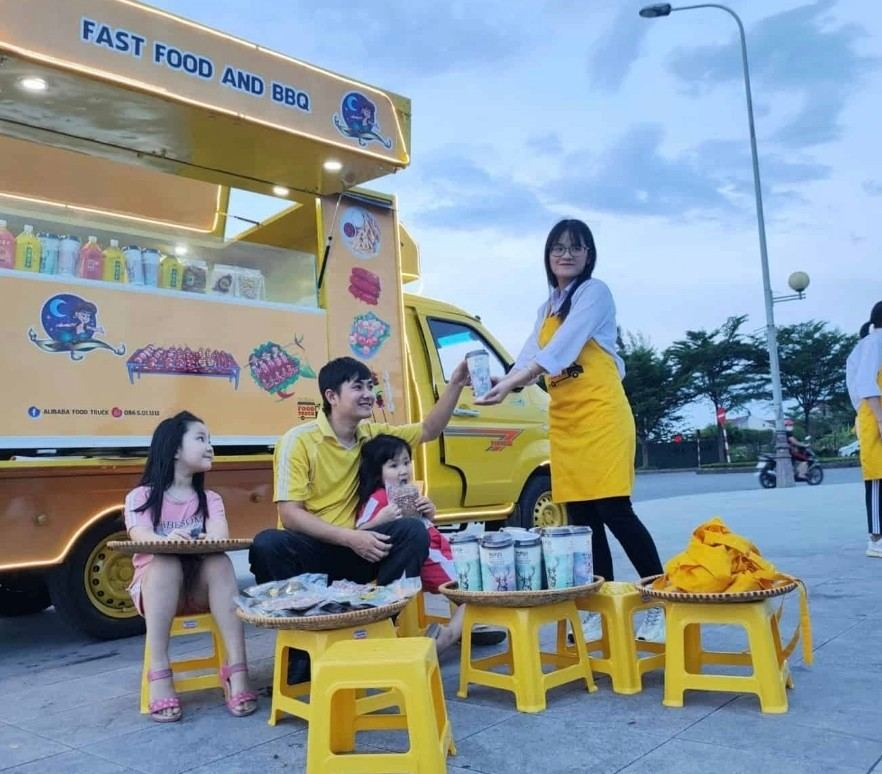
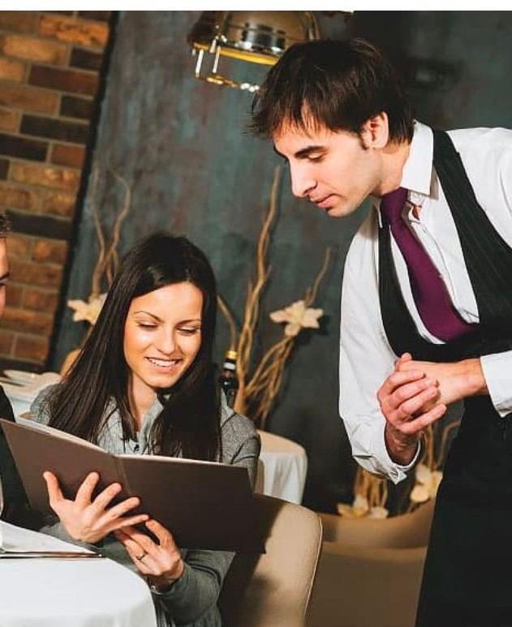

Aptis Speaking (a time you get a gift)
Part 1: (30s each q)
Tell me about your family – there are 4 people in my family; my wife, my two children and me. My wife is a doctor for a hospital in HN. My children are little. One is 4 years old and the other is 8. At the weekend, we often go on a picnic together. I really love my family and I want to spend time with them. On special days, we also like to cook a meal together at home. Family time always makes me feel warm and happy.
What do you like to do on the weekend? (what, who, when, why, where…)
On the weekend, I play sports. I often play football with my friends. It’s enjoyable and healthy. It helps me relax after work and improve my health. Besides, it allows me to keep fit and prevent health problems. We usually play for about two hours every Sunday morning. Afterward, we often have a drink together and chat.
I am going to tell you about my hometown. It is Halong Bay, a city in the north of VN. It is not very far from HN, about 100 km. It is beautiful and famous. Here we can swim in the sea, eat seafood, climb the mountains and visit some islands. The weather is very nice. The food is delicious, healthy, cheap and fresh. The people are friendly and kind. The always help other people. I really love my hometown. Many tourists visit every year to see the beautiful bay. I always feel proud when I introduce my hometown to others.
Part 2: (45s for each q)
Look at the picture, I can see many people in a cinema. They are laughing so I think they are watching a comedy/ funny film. A girl is holding popcorn and some people are holding their drink. They look relaxed. I really like this picture / This is a nice picture. The atmosphere looks fun and lively. I think watching a movie with friends is always more enjoyable than watching alone.
Yesterday evening I watched a program called “The road to Olympia”. This is a game show for high school students. It’s really interesting and useful because it can help me relax and broaden my mind. I like watching students answer difficult questions quickly. It also motivates me to learn new things.
My favourite field is Tom and Jerry. It is an American cartoon for children. It is about the battles between a cat, Tom and a mouse, Jerry. The mouse is always the winner because he is very intelligent. I really love this cartoon because it is really funny. It can help e reduce stress after work. I have watched it since I was a small child. Even now, it still makes me laugh every time.
Part 3: (45s for each q)


The two pictures show people eating in different places
In the first picture I can see some people eating in a fast food counter on the street while in the second picture I can see a couple eating in a restaurant.
In the first picture people are eating whereas in the second picture they are ordering
The people in the first picture have to serve themselves but the people in the second picture are served. The fast food place looks busy and quick, while the restaurant looks calm and comfortable. Both pictures show people enjoying their meal in their own way.
Eating in a fast food counter or eating in a restaurant have different benefits and suitable for each kind of people depending on their preference and budget
Some people like eating in a fast food counter because the food is cheap
Personally, I prefer eating in a restaurant because the food there is delicious and healthy although the price is not cheap. It is not noisy or crowded, either. I usually go to a restaurant for special occasions like birthdays. It feels more special when the food is served nicely.
There are some reasons why some people like to eat alone. The first reason is that they can eat faster because they just focus on their eating. Another reason is that it is good for their health. If they do not focus on eating, it may cause stomach. Some people also enjoy having quiet time to think during their meal. I think eating alone sometimes can be relaxing too.
Part 4: (1’ prepare – 2’ answer 3 questions)
Tell me a time you received a gift
How did you feel about this gift?
Do you prefer handmade gift or give bought in store?
Regarding the first question, I received a watch from my parents on my birthday last year.
Turning to the second question, I felt very happy and thankful because it was exactly what I wanted.
About the last question, I prefer a handmade gift because it shows more care and effort from the giver, even though a gift bought in a store can also be very useful.